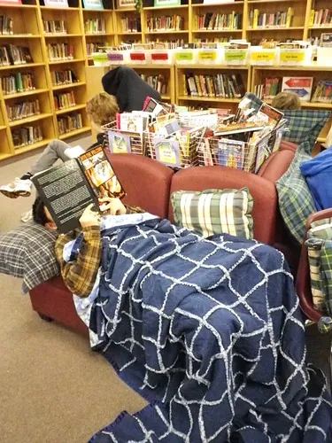

About Teacup Puzzlers
Teacup Puzzlers is a small, independent nook of cozy brain games, made for the simple pleasure of a quiet puzzling hour. It grew from a fondness for the old, gentle pastimes — the word ladder, the anagram, the riddle shared across a kitchen table — and a wish to offer them somewhere warm, unhurried, and free of the noise that fills so much of the modern web.

What we make
Everything here is original and made by hand. We write the word ladders and choose their clues, scramble the anagrams, dream up the riddles, and gather our nostalgia trivia from the warm, well-documented facts of the decades themselves. Each trivia answer is checked against reliable references before it joins a round, and our puzzles are built from scratch rather than borrowed from anywhere.
Who it is for
We have the unhurried solver in mind, and the older solver most of all. The type is large and grows larger at a tap, the colors are soft but easy to read, and every puzzle can be checked or revealed without the least embarrassment. Our aim is a page that feels like a friend's company on a rainy afternoon — kind, patient, and never once in a hurry.
Free, and gladly so
Teacup Puzzlers is an independent little nook of cozy brain games. It costs nothing to play here, there is nothing to buy, and we take no payments of any kind. We run no advertising and ask for no account. Teacup Puzzlers is an independent educational website and is not affiliated with any game maker, publisher, or brand; where a puzzle resembles a familiar favorite, it is made in fondness and from scratch, never copied.
A small promise
We keep a short list of promises and mean every one. The puzzles will always be original and made by hand. The trivia will always be checked, and corrected gladly whenever we slip. The pages will stay free, calm, and uncluttered, with nothing to buy and nobody trying to sell you anything. And your visit will be yours alone — we gather nothing about you beyond the text size you choose, which never leaves your own device. That is the whole character of the nook, and we intend to keep it that way.
About the photographs
The handful of photographs here are openly licensed images from public collections, downloaded and kept on our own pages rather than borrowed from across the web. Where a license asks for credit, we name the photographer beneath the picture, and a full list lives in the site's image credits file.
Come and say hello
We love to hear from fellow puzzlers — a game you enjoyed, a theme you would like to see, a decade you would like us to add, or a correction we ought to make. Reader notes genuinely shape what we build next, so please do not be shy about sending yours. Write any time to hello@teacuppuzzlers.com, and see our Contact page for what to expect. The kettle, as ever, is on.